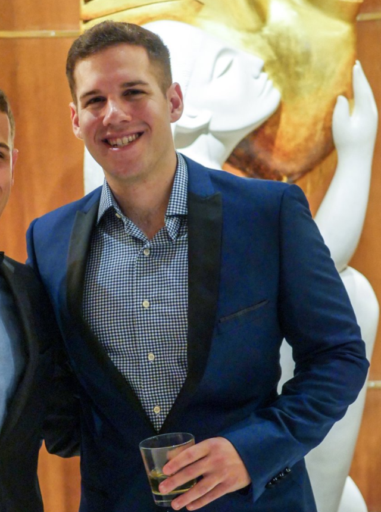
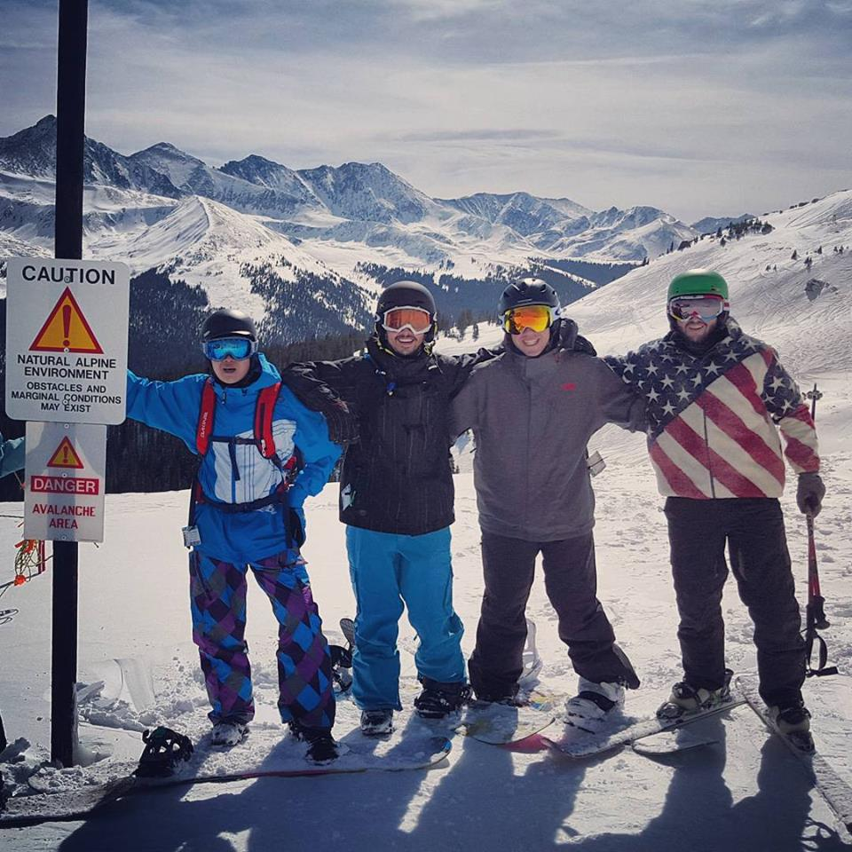

About Me
 
Peruvian food, peruvian food, and more peruvian food. That is the best way to some up what I care most about in this world. The first time I ever tried it was after a particularly tough final, sophmore year of college. My friends asked me if I wanted to come to Sardi's Pollo a la Brasa, I had never heard of it...it changed my world. I had a half chicken, arroz chaufa with pinto beans, and mixed vegetables. Oh and a choco taco. It really took away the sting of that exam.
However, if I must mention anything else about myself, lets start with the basics. I work for AT&T doing automation and database development, and my favorite hobby is snowboarding. My favorite mountain to visit is Crested Butte, Colorado. It is a real pain to get to, but it is well worth the trip.
Side note, writing about myself is something I really hate. I never know quite what to say. So I'm just gonna go ahead and end it here, then probably come back and add more at somepoint...maybe...
Connect with Me